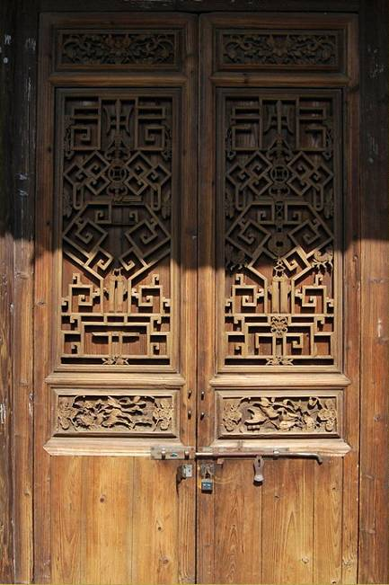
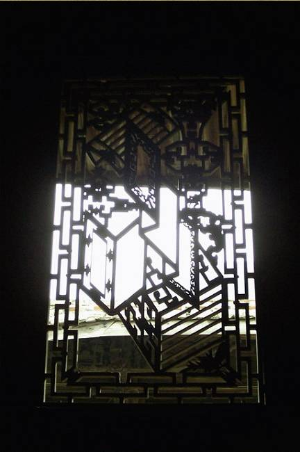
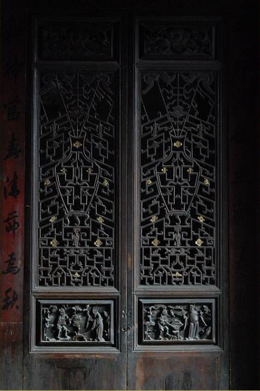
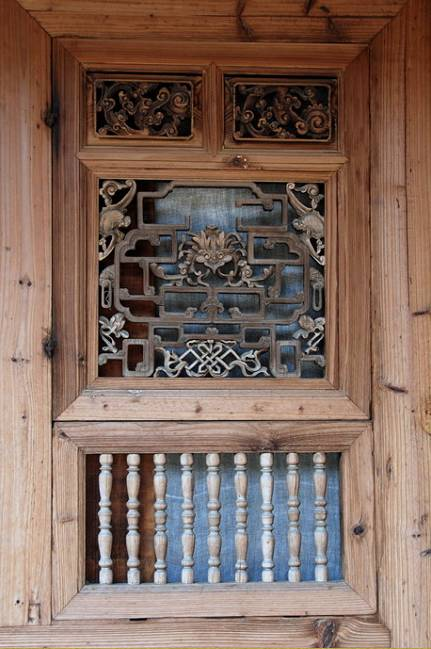
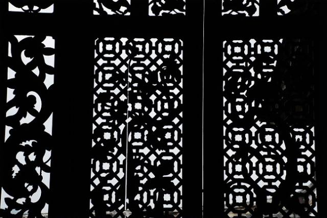

古建筑的眼睛，花样隔窗
槅扇又称格门、格扇，根据开间大小，每间可做四扇，由立向的边挺和横向的抹头组成木构框架。抹头又将槅扇分成槅心、绦环板和裙板三部分。槅心是主要部分，占整个槅扇高度的五分之三，由棂条拼成各种图案。
一



棂条分内外两层，中间糊纸、夹纱或安玻璃。室内槅扇多采用夹纱做法，所以又称碧纱橱。绦环板和裙板亦多雕刻各种装饰图案。室内槅扇的雕刻较为细腻。
二



槅扇上下一般安有转轴，可以自由开合。有的槅扇不用绦环板和裙板，而像槅心一样使用棂条，称落地明造。
槅扇是用木头做成的柱于柱之间的隔断窗，周围有框架，一般所指中间镶嵌通花格子门，由一个门扇框组成，立向的称边挺，横向的称抹头，常见于神神龛的两侧。
抹头又将槅扇分为三部分：1 安装透光的通花格子称槅眼或花心2 下半部实心木格称裙板3 花心与裙板之间称环板。常使用在一个房屋的明间和次间的开间上。每间可分为四扇、六扇，要看开间大小而定。